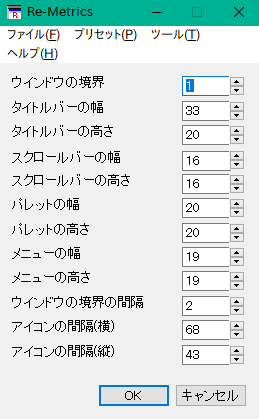

エクスプローラーから左のアイコンの実行ファイルReMetrics.exeをダブルクリックするなどして、ReMetrics.exeを実行してください。
下記の画面が表示されます。

画面が表示されると画面の各部分の名称と設定されているサイズが表示されます。
テキストボックスにサイズを入力するか、横のスピンボタンをクリックして画面各部の幅・高さを入力してください。
設定が終わったらOKボタンを押下すると画面の各部分の幅・高さを指定した数値に設定します。
実際の画面の各部分の幅・高さは入力した数値に対し、OSの側で調整されたサイズになります。
キャンセルボタンを押下すると何もせずに本ソフトを終了します。
メニューバーの各メニューの機能を説明します。
画面上の各項目の内容は次のとおりです。
「アイコンの間隔(横)」「アイコンの間隔(縦)」はデスクトップを右クリックして「表示」の「アイコンを等間隔に整列する」もしくは「アイコンの自動整列」のチェックをいったん外した後再度チェックすることで有効になります。
コマンドラインからオプションを指定することで起動時にウインドウ設定を読み込むことができるほか、指定したウインドウ設定で自動的にウインドウ各部の幅・高さを設定することができます。
コマンドラインの書式は以下の通りです。
ReMetrics ウインドウ設定ファイル名 [-set]
ウインドウ設定ファイルには本プログラムでウインドウ設定を保存したiniファイルを指定します。
ウインドウ設定ファイル名に空白を含む場合はファイル名を"(ダブルクォーテーション)で囲ってください。
ウインドウ設定ファイル名の後に空白を入れて-setと入力すると指定したウインドウ設定ファイルの内容でウインドウ各部の幅・高さを設定してプログラムを終了します。
バッチファイルなどで使用するとあらかじめ用意したウインドウ設定ファイルの内容にウインドウ各部の幅・高さを一発で設定することができて便利です。
MySet.iniというウインドウ設定ファイルを起動時に読み込む場合はコマンドプロンプトなどから以下のように入力します。
ReMetrics MySet.ini
Your Settings.iniというウインドウ設定ファイルの内容にウインドウ各部の幅・高さを設定する場合はコマンドプロンプトなどから以下のように入力します。
ReMetrics "Your Settings.ini" -set